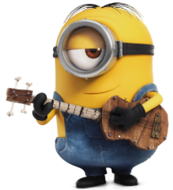
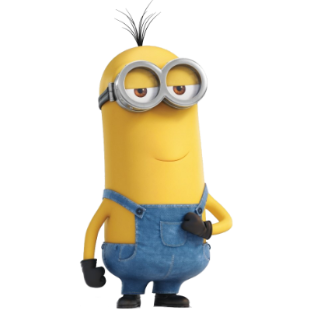
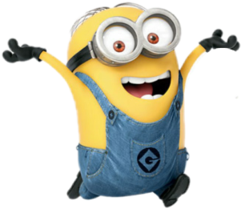
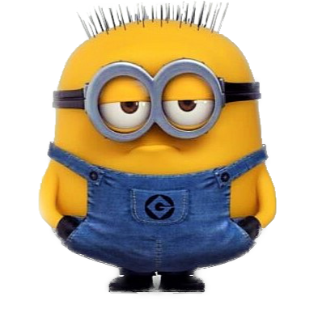
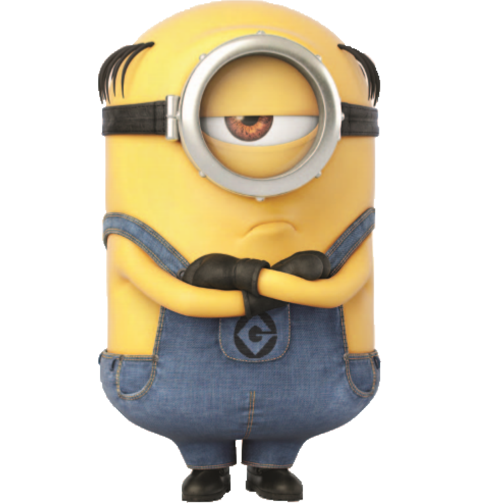

Bob is a short and bald minion with multi-colored eyes (green and
brown). He is more childish and immature than most of the other
minions. He also enjoys bedtime stories and playing with his
favorite stuffed teddy bear, Tim.

Stuart the minion
Stuart is an one-eyed short Minion with combed hair. He is considered to be a slacker among the other Minions, preferring to chill out and play the ukulele than listen to the rules. He is playful, friendly, intelligent and funny.

Kevin the minion
Kevin is a tall, two-eyed minion with sprout cut hair. Kevin loves to make fun of and tease people or Minions. In the film Minions he is the leader of the trio in search of a new master. He truly cares about the well-being of the Minion tribe

Dave the minion
Dave is an intelligent minion who is kind, caring, and funny, but sometimes accident-prone. He is skillful at video games. He is always very excited as seen when he fired his Rocket Launcher, his signature weapon. He is also good at using weapons and making cupcakes, amongst other foods.

Jerry the minion
Jerry is a short and plump Minion with buzz-cut hair and two eyes. He is very sensitive as seen when Kevin teases him for being a coward. He is also easily got scared when he hear any strange noises. He loves to play his guitar.

Mel the minion
Mel is an one-eyed short minion with combed, half-bald and thick hair. In Despicable Me 3, he is the leader of the Minions. He makes a cameo appearance in the Illumination Entertainment variant for Sing and Despicable Me 3.